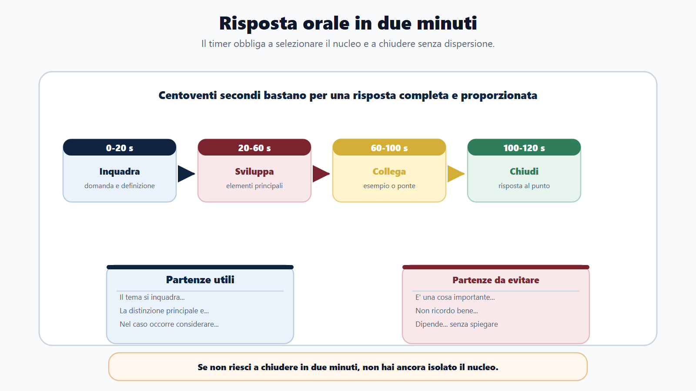
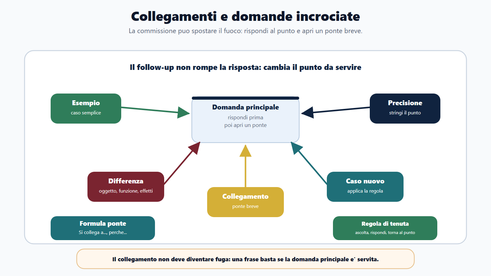
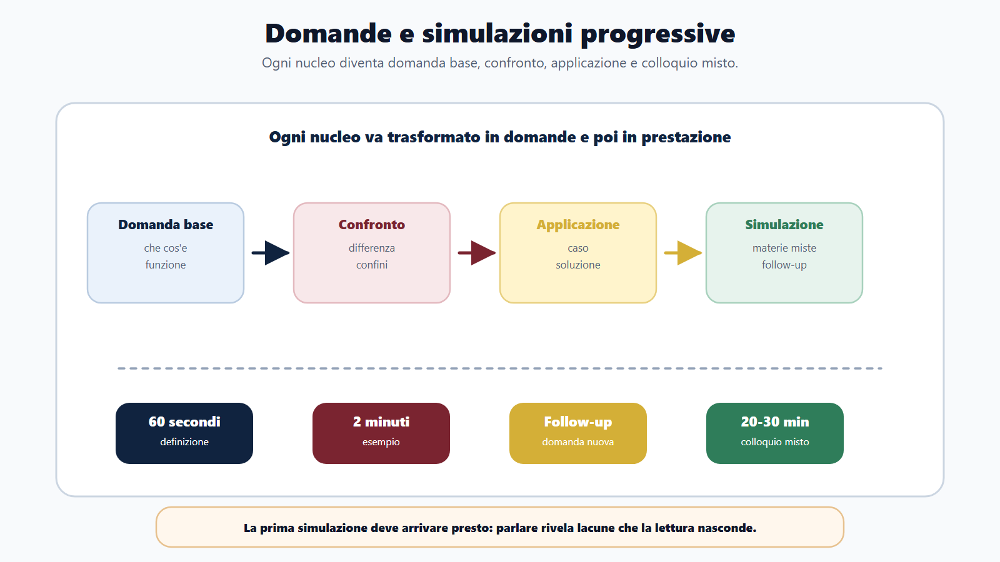
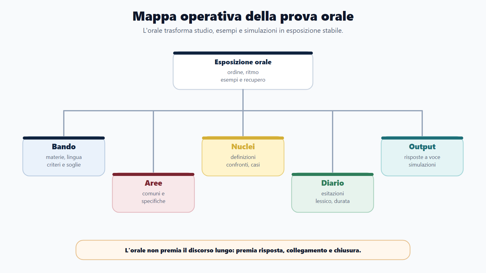
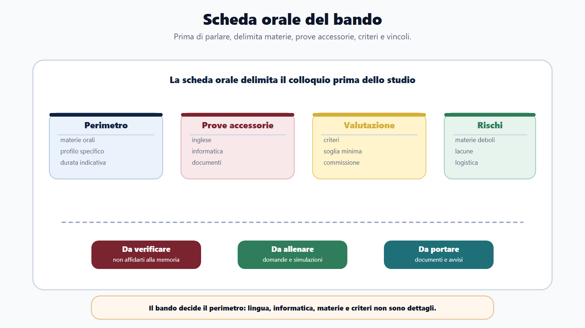
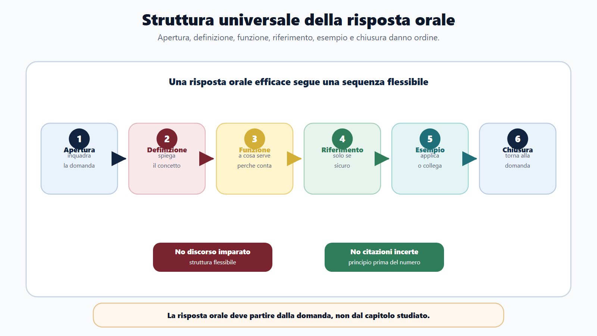

VOL-01 · Capitolo 16
Parte III · Allenarsi come in prova
La prova orale
L’orale porta lo studio davanti alla commissione. Devi iniziare, ordinare, collegare, scegliere esempi, correggerti se parti male e restare lucido davanti a una domanda inattesa. Non misura solo memoria: misura padronanza.
Schema
Risposta due minuti

Schema
Collegamenti domande incrociate

Schema
Domande simulazioni progressive

Schema
Mappa operativa prova orale

Schema
Scheda orale bando

Schema
Struttura universale risposta orale

01 · Perché non è una ripetizione
Parlare rivela subito le lacune
Molti rimandano l’orale alla fine: prima studio, poi ripeto. È un errore. L’orale va preparato mentre studi, perché la voce mostra definizioni confuse, passaggi saltati, esempi assenti, collegamenti deboli, frasi troppo lunghe. La memoria ti permette di ricordare parole; la padronanza ti permette di spiegare un concetto anche se la domanda cambia forma.
Che cos’è
Un output autonomo: risposta ordinata, sotto pressione, con possibile inglese, informatica, profilo e follow-up. L’obiettivo non è imparare discorsi a memoria. È una struttura flessibile che regge anche se la domanda si sposta.
A che serve in prova
La commissione ascolta se sai inquadrare, definire, collegare e chiudere. Un colloquio breve e nozionistico e un colloquio di ragionamento si preparano in modo diverso: il bando decide il perimetro.
Rileggere i manuali a voce bassa e scoprire, a libro chiuso, di non saper spiegare procedimento, accesso e pubblico impiego. Ripetere mentalmente non è simulazione.
02 · BANDO
La scheda orale prima delle domande
Prima di preparare l’orale, compila materie, inglese, informatica, profilo, durata se nota, criteri, soglia, documenti, sede, materie più deboli. Alcuni colloqui includono lingua e informatica: non sono dettagli.
| Che cosa controlli | Prodotto | Se la salti | |
|---|---|---|---|
| B — Bando | Materie orali, lingua, informatica, profilo, criteri e soglie. | Scheda orale del concorso. | Prepari un colloquio generico, non quello previsto. |
| A — Aree | Comuni, specifiche, collegamenti, domande trasversali. | Mappa orale per aree. | Tieni le materie in scomparti che la commissione non rispetta. |
| N — Nuclei | Definizioni, principi, procedure, confronti, casi, esempi. | Schede domanda-risposta. | Prepari solo definizioni, poi arrivano differenza e applicazione. |
| D — Diario | Esitazioni, risposte lunghe, lacune, lessico incerto. | Diario orale. | Ripeti sempre gli stessi difetti. |
| O — Output | Risposte a voce, simulazioni, domande incrociate, mini-colloqui. | Esposizione stabile. | Scopri troppo tardi di non saper parlare del materiale. |
«Dipende» è una buona risposta solo se poi spieghi da che cosa dipende.
Evita inizi vaghi: «Allora, in pratica…», «È una cosa molto importante…», «Non mi ricordo bene, però…». Meglio: «Il tema può essere inquadrato partendo da…», «La distinzione principale è…», «Per rispondere al caso occorre considerare…».
03 · Struttura
Sei passaggi, non un discorso a memoria
Questa struttura non deve diventare meccanica. Deve darti ordine. Esempio: buon andamento. Non è solo velocità: è qualità complessiva dell’azione amministrativa. Si collega a procedimento, organizzazione, responsabilità, performance e trasparenza. Un esempio concreto chiude meglio di una formula astratta.
Apertura
Inquadra la domanda, senza partire troppo largo né troppo secco.
Definizione e funzione
Che cos’è e a che serve. È il nucleo che la commissione deve sentire nei primi venti secondi.
Riferimento
Principio o fonte solo se sicuro. Un articolo inventato è peggio di un perimetro dichiarato.
Esempio e chiusura
Applicazione o collegamento breve, poi torna alla domanda. Senza chiusura la risposta resta sospesa.
04 · Due minuti
Abbastanza per ordinare, pochi per selezionare
Allenati a rispondere in due minuti. Se non riesci a spiegare un argomento in due minuti, probabilmente non hai ancora isolato il nucleo. Se parli per cinque minuti senza chiudere, devi lavorare sulla struttura, non sulla quantità di nozioni.
| Tempo | Contenuto | Se sbagli questa quota |
|---|---|---|
| 0–20 secondi | Inquadramento e definizione. | Parti largo e perdi il punto, o parti secco e sembri insicuro. |
| 20–60 secondi | Elementi principali. | Elenco disordinato, senza gerarchia. |
| 60–100 secondi | Esempio o collegamento. | Risposta astratta, difficile da valutare. |
| 100–120 secondi | Chiusura che torna alla domanda. | La commissione non sa se hai finito o se ti sei perso. |
05 · Collegamenti
Un ponte, non una fuga
All’orale le materie non restano sempre separate. Una domanda sul procedimento può portare all’accesso, alla trasparenza, alla privacy, alla digitalizzazione, al pubblico impiego o alla responsabilità. Devi rispondere alla domanda principale e poi, se utile, aprire un ponte. Una frase può bastare: «Questo tema si collega anche a…, perché…».
| Domanda iniziale | Collegamenti possibili |
|---|---|
| Procedimento amministrativo | Responsabile, partecipazione, motivazione, accesso, silenzio. |
| Trasparenza | Accesso civico, privacy, anticorruzione, amministrazione trasparente. |
| Pubblico impiego | Doveri, codice di comportamento, responsabilità, performance. |
| Contratti pubblici | RUP, programmazione, trasparenza, digitalizzazione, controlli. |
| PA digitale | Documento informatico, firma digitale, PEC, sicurezza, accessibilità. |
06 · Vuoti e follow-up
Il vuoto si gestisce, l’interruzione non è un attacco
Se non ricordi un dettaglio, torna a ciò che sai con sicurezza: definizione, principio generale, funzione, esempio. Evita articoli o numeri incerti. La commissione può interrompere, chiedere un esempio, spostare materia o chiedere una distinzione: è parte del colloquio.
Vuoto di memoria
«Non ricorderei in questo momento il numero esatto dell’articolo, ma il principio è che l’amministrazione deve concludere il procedimento e rendere comprensibili le ragioni della decisione.» Questa risposta è meglio di una citazione inventata.
Domande incrociate
«Mi faccia un esempio»: caso semplice di ufficio. «Qual è la differenza?»: oggetto, funzione, effetti. «E se invece…»: applica la regola al caso nuovo. «Può essere più preciso?»: stringi su definizione o passaggio mancante. Prima ascolti, poi rispondi al nuovo punto.
Il segreto è non perdere l’ordine. Il collegamento non deve diventare fuga: dopo il ponte, torna al punto.
07 · Tre domande per nucleo
Base, confronto, applicazione
Questa tecnica impedisce di preparare solo definizioni. L’orale reale spesso parte da una definizione e poi chiede differenza o applicazione. Esempio su accesso: che cos’è l’accesso documentale; come si distingue dal civico generalizzato; che cosa valutare se coinvolge dati personali.
Base 60 secondi
Definizione e funzione. Se questa non sta in piedi, le altre due crollano.
Completa 2 minuti
Definizione, elementi, esempio, chiusura. È la misura standard da allenare ogni giorno.
Incrociata
Risposta più collegamento con un’altra materia, senza perdere la domanda principale.
Simulazione
Venti-trenta minuti con materie miste, poi rifinitura su deboli, lingua, informatica, profilo.
08 · Simulazione e diario
A voce, con timer, correzione dopo
Scegli domande casuali, rispondi a voce, usa il timer, registra audio se possibile, non interromperti a ogni errore, correggi dopo. Segna durata, chiarezza, lacune e parole incerte. La prima simulazione deve arrivare presto: se aspetti l’ultima settimana, scoprirai troppo tardi di non saper parlare.
| Categoria nel diario | Segnale | Correzione |
|---|---|---|
| Definizione incerta / norma citata male | Giri di parole, numeri dubbi. | Scheda breve; niente articoli se non sicuri. |
| Troppo lunga / chiusura assente | Cinque minuti senza punto. | Struttura a due minuti, chiusura obbligatoria. |
| Mancanza di esempio | Tutto astratto. | Un caso di ufficio, cittadino, istanza, atto. |
| Collegamento forzato | Fuga di materia. | Un ponte di una frase, poi ritorno. |
| Inglese o informatica trascurati | Sorpresa in commissione. | Blocco proporzionato, non da specialista salvo profilo. |
09 · Inglese, informatica, ultimi sette giorni
Proporzionati, poi consolidare
Se il bando prevede accertamento di inglese o informatica, preparali in modo proporzionato. Non serve parlare come uno specialista, a meno che il profilo lo richieda. Serve rispondere con ordine. Negli ultimi sette giorni non apri nuovi mondi.
Inglese e informatica
Inglese: presentazione breve, lessico amministrativo essenziale, frasi su lavoro, ufficio, email, servizio pubblico, comprensione di un breve testo, risposte semplici e corrette. Informatica: definizioni chiare, differenze tra strumenti, esempi di uso nella PA, sicurezza di base, PEC, firma digitale, identità digitale, documento informatico se previsti dal programma.
Settimana finale
Giorni −7/−6: mappa e nuclei deboli. −5: simulazione mista. −4: definizioni e confronti. −3: casi e collegamenti. −2: inglese, informatica, profilo, documenti. −1: ripasso leggero, logistica, sonno. Giorno prova: risposte brevi, calma, ascolto della domanda. L’ultimo giorno non serve dimostrare che puoi studiare tutto.
10 · Caso guidato
Marta, tre settimane all’orale
Ha superato lo scritto. All’inizio rilegge i manuali. Dopo cinque giorni, a libro chiuso, non riesce a spiegare bene procedimento, accesso e pubblico impiego. All’orale non ricorderà un dettaglio numerico, ma non si bloccherà: tornerà al principio, spiegherà la funzione e userà un esempio.
Rilettura
Il libro resta aperto. La voce non viene allenata. Le risposte, quando arrivano, sono troppo lunghe e senza esempi.
Tre domande, due minuti, sabato misto
Per ogni materia: base, confronto, applicazione. Ogni giorno tre risposte da due minuti. Diario: troppo lunghe, senza esempi. Impone definizione, funzione, esempio, chiusura.
11 · Verifica
Due domande da saper spiegare
Come si prepara in modo efficace una prova orale?
Si parte dal bando, individuando materie, profilo, eventuale inglese e informatica. Poi si trasformano i nuclei in domande orali: definizione, confronto e applicazione. Ogni risposta va allenata a voce con una struttura chiara: inquadramento, definizione, funzione, esempio e chiusura. Le simulazioni devono essere progressive e gli errori registrati in un diario.
All’orale è meglio parlare molto per mostrare preparazione?
No. Parlare molto può diventare dispersione. La commissione deve capire che sai rispondere alla domanda. Una risposta breve, ordinata e precisa è spesso più forte di una risposta lunga che perde il punto.
12 · Mini-esercizio
Registrati su un solo argomento
Poi valuta: si capisce l’inizio? C’è un esempio? La chiusura risponde alla domanda? Hai usato parole precise? Se una di queste quattro risposte è no, quella è la correzione della prossima sessione.
| Tipo | Vincolo | Che cosa ascolti in playback |
|---|---|---|
| Base | 60 secondi: definizione e funzione. | Il nucleo è isolato o giri a vuoto? |
| Completa | 2 minuti: definizione, elementi, esempio, chiusura. | Rispetti i quarti di tempo? |
| Incrociata | Risposta più collegamento con un’altra materia. | Il ponte è una frase o una fuga? |
13 · Da tenere ferme
Cinque regole, con il perché
1. L’orale va preparato a voce, non solo leggendo, perché parlare rivela lacune che la sottolineatura nasconde.
2. Ogni risposta deve avere struttura, esempio e chiusura, perché la commissione valuta padronanza, non un elenco di parole ricordate.
3. I collegamenti servono, ma non devono far perdere la domanda principale, perché un ponte è una frase, non un nuovo capitolo.
4. I vuoti di memoria si gestiscono tornando a principi sicuri, perché un articolo inventato danneggia più di un perimetro dichiarato.
5. Simulazioni e diario orale trasformano lo studio in padronanza, perché senza timer, voce e correzione resti fermo alla ripetizione mentale.
Prossimo capitolo
Casi pratici e problem solving amministrativo
Dalla spiegazione alla decisione: fatti, competenza, vincoli, soluzione tracciabile. Il caso misura il prossimo passo corretto.